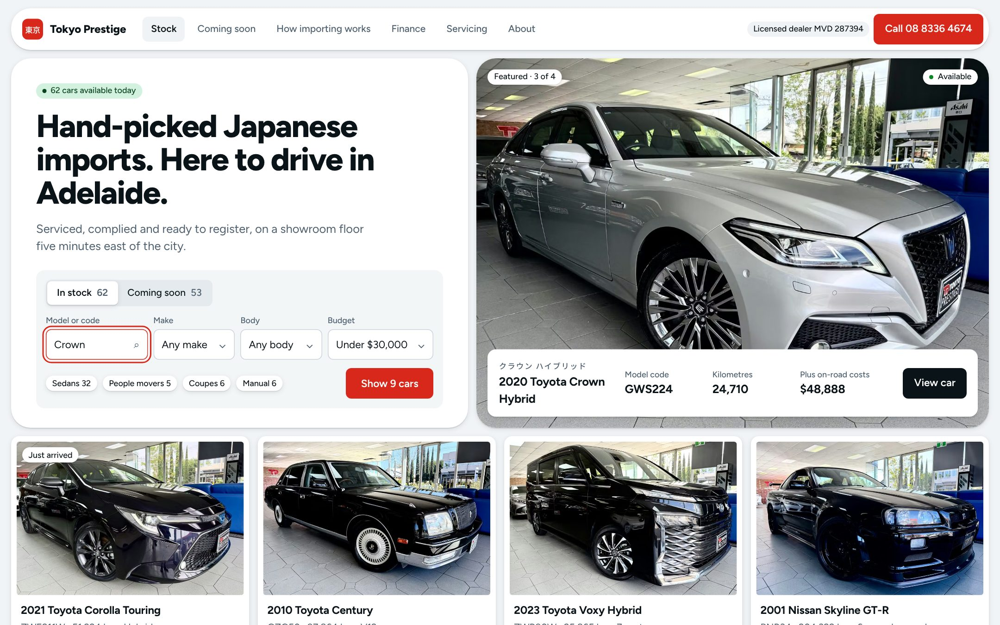

Lumen adl for Tokyo Prestige · November 2026
Five design directions
The same cars, prices and facts, shown five ways. Each direction answers a different finding from the research, so the choice is about which buyer the site should put first.
- AThe showroom at nightDark and cinematic. The car lit, everything else quiet. Built: the demo opens in it.
- CThe galleryLight and editorial. One car at a time, labelled like an exhibit.
- DFind it fastA marketplace layout. Search and results on the first screen.
- EBuilt on AstryxAssembled from Meta's open design system, with a Tokyo Prestige theme. Light and dark.
- JThe figuresFour figures, always the same, always first. Light and calm. Built: one tap away in the demo.
All cars, prices and figures are from tokyoprestige.com.au, 11 Nov 2026. A and J are both built into the working site, with a switch between them; the others are mock-ups of two screens. The last page sets out what automation and AI can add after the site.


